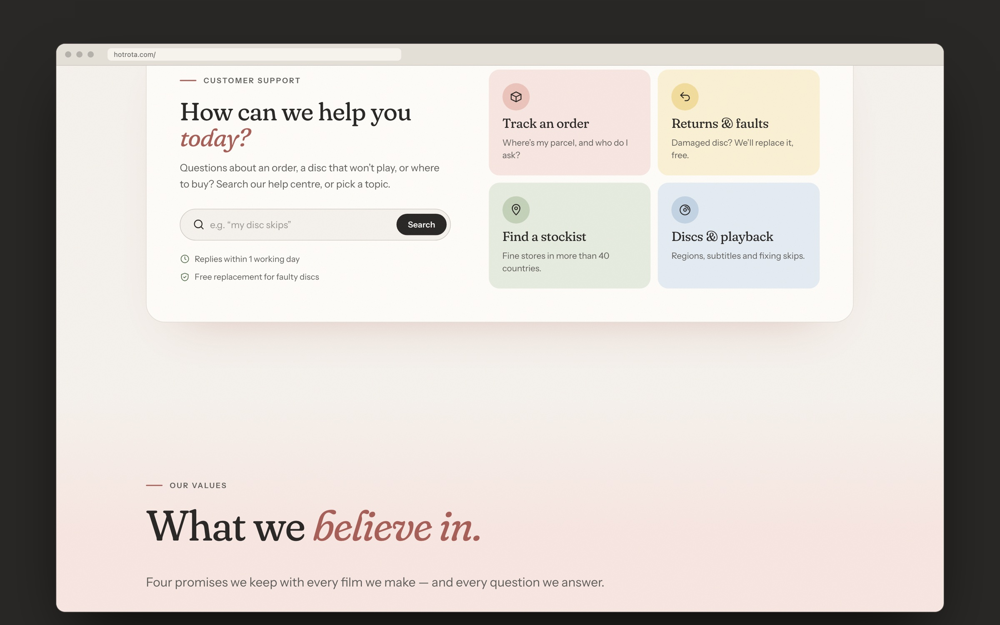
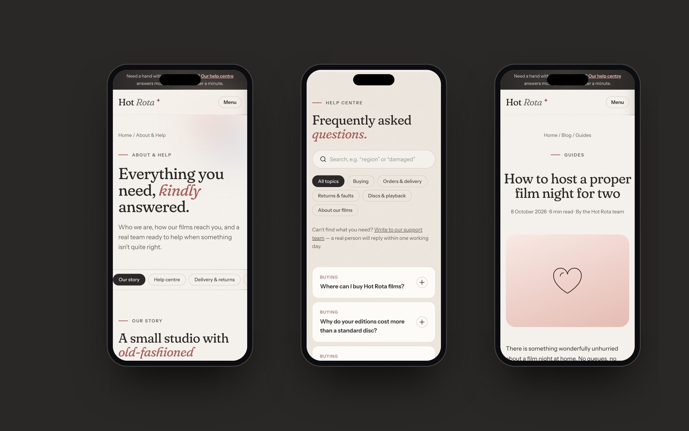
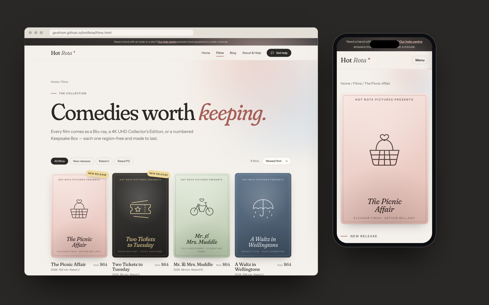

I designed and built a customer-support website for Hot Rota, a small studio making gentle, old-fashioned comedy films for couples, sold on disc in stores around the world. The brief asked for a site that puts help first, while still feeling as warm and crafted as the films themselves.
Problem Statement
Hot Rota doesn’t sell online; its films reach people through stockists in many countries. That means most visitors arrive with a question: where to buy a film, where their order is, what to do about a damaged disc, or why a disc won’t play. A typical studio site leads with trailers and hides support in the footer. Hot Rota needed the reverse, without losing the charm that makes people want the films in the first place.
Goals
- Answer the most common questions in a few seconds, from any page.
- Make it easy to find a stockist by region or by name.
- Present the films and their editions clearly, so people know what to ask for in a store.
- Give the brand a distinct, nostalgic personality that matches the films.
- Keep it simple to run: plain HTML, CSS and JavaScript, no build step, with all content in one file.
Support First

- Help on every page: a slim bar at the top of every page points to the help centre, and the header’s main button is “Get help”, not “Shop”.
- Four doors in: track an order, returns and faults, find a stockist, and discs and playback. Each card opens the right part of the help centre.
- Searchable FAQ: the help centre filters answers as you type, with topic chips for buying, orders, returns, playback and the films themselves.
- Stockist finder: browse by region, or search across every store by city or name.
- A real person, always: every help section ends with a route to the support team and a clear reply time.

Design Direction
- Palette: the brand colour, Rota Grey, sits on warm cream paper, supported by soft “matinee” pastels: rose, butter, sage and powder blue. Each support topic and film has its own pastel, so colour helps people find their way.
- Typography: Fraunces, a soft, slightly quirky serif, for headlines, with an italic accent word in each one, and Instrument Sans for everything you read or tap.
- Posters without photos: each film gets a duotone poster with a simple line drawing (a picnic basket, a tandem bicycle, a lighthouse) and an old-fashioned “Hot Rota Pictures presents” frame. The set looks like a collection and needs no photography to launch.
- Texture: a faint, moving film grain over the whole site, ticket-stub stamps and scrolling marquees of film titles.
Films and Editions

- A catalogue that filters by new releases and by rating, and sorts by date, title or running time. Cards glide to their new places when the filter changes.
- Film pages that set out the three editions (Blu-ray, a 4K Collector’s Edition and a numbered Keepsake Box) with what’s inside each, plus region-free playback and help links.
- A blog for guides and studio stories, such as hosting a film night for two or how region codes work, that also takes pressure off support.
Motion With Manners
- Curtain call: on the first visit, a theatre curtain parts to reveal the site. It plays once per visit.
- Posters you can handle: they tilt and catch the light under the pointer, drift gently in the hero, and morph into the film page when clicked.
- Small delights: headlines arrive word by word, numbers count up, primary buttons lean towards the cursor, and hearts float through the social section.
- Optional by design: all motion lives in one layer the site doesn’t depend on, and it switches off for anyone who prefers reduced motion.
Built to Hand Over
- Six pages in plain HTML, CSS and JavaScript, with no dependencies or build step.
- All films, posts, FAQs, stockists and social links live in a single content file, so the studio can update the site without touching layout code.
- Design tokens for colour, type, spacing and motion, set in one place.
- Accessible by default: semantic structure, labelled controls, visible focus states and responsive layouts down to phone width.
Outcome & Learnings
- Putting support first doesn’t have to make a site feel like a helpdesk. The same warmth that sells the films makes the help pages feel friendly.
- Giving each topic and film its own colour turned the palette into wayfinding, not just decoration.
- Treating motion as an optional layer let me be playful without putting anyone’s experience at risk.
- Next steps before launch: connect the contact and newsletter forms to a helpdesk, and replace the placeholder films, stockists and contact details with the studio’s own.